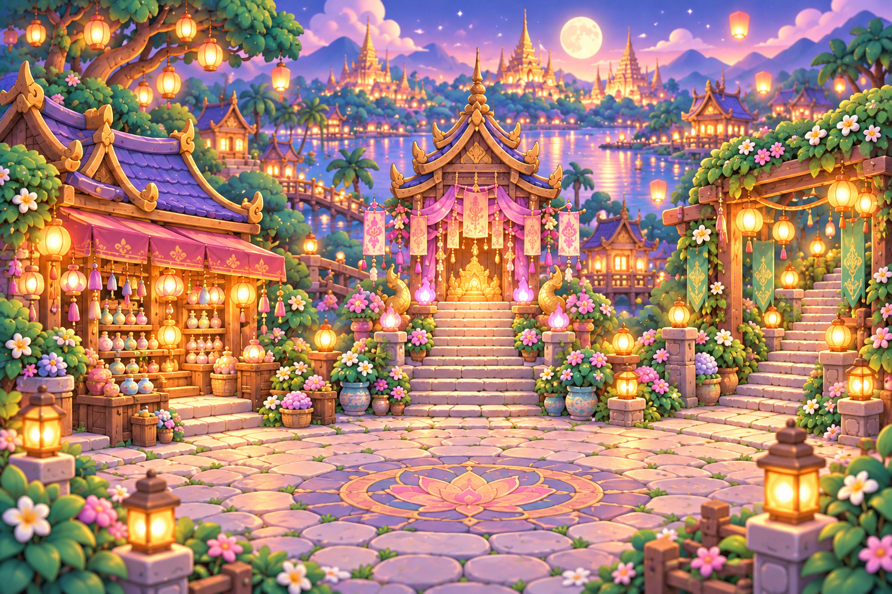

1
ยินดีต้อนรับกลับบ้าน
นักเดินทาง
ผู้ผูกวิญญาณฝึกหัด
กำลังเชื่อมต่อ…
ThaiNative
ศึกแห่งไสยเวท
◉
1,200
เหรียญ
✦
18
หินตีบวก
⚙
เสียงและการเคลื่อนไหว
เปิดฉากเคลื่อนไหว
♪ เสียงกด
♫ เพลง
?

พูดคุยกับลุงบุญ
♧
ลุงบุญ · พ่อค้าของวิเศษ
ร้านขายของ
↗
✦ เปลี่ยนชุด · เปลี่ยนตัวละคร
✦
แม่หมอม่วง · ผู้ผูกมิตรวิญญาณ
ศาลแปลงโฉม
↗
ข้าวหอมพร้อมนำทางแล้ว!
⚑
ข้าวหอม · ผู้นำทางแห่งพงไพร
ออกผจญภัย
→
☽
ดินแดนระหว่างสองโลก
หมู่บ้านแสงโคม
ทุกการเดินทาง เริ่มต้นด้วยมิตรภาพ
LOBBY CONCEPT
01
คืนนี้… จะได้พบเพื่อนใหม่คนไหนนะ?
✧
⌂
หมู่บ้าน
HOME
❀
อุปกรณ์
EQUIPMENT
♧
0
กระเป๋า
INVENTORY
◈
ร้านขายของ
SHOP
⚒
ตีบวก
FORGE
⚔
ลานประลอง
LIVE PVP
ออกผจญภัย →
บทที่ ๑ · แสงโคมในป่าลับ
×
✧ THAINATIVE VILLAGE ✧
✉ แชทหมู่บ้าน
0
ออนไลน์
➤